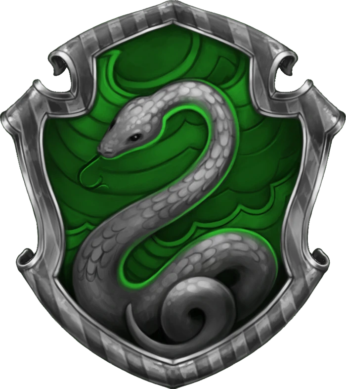

HARRY POTTER
HOGWARTS DORM
slytherin

" 아니면 Slytherin에서 당신은 당신의 진정한 친구가 될 것입니다.
그 교활한 사람들은 그들의 목적을 달성하기 위해 어떤 수단을 사용합니다 . "
— 슬리데린 특성에 관한 분류 모자
슬리데린은 네 기숙사 중 하나입니다. 살라 자르 슬리데린에 의해 설립되었으며, Salazar는 분류모자에게 자신이 가장 중요하게 생각하는 몇 가지 특별한 특성인 교활함, 수완,
리더십 및 야망을 가진 학생들을 선택 하도록 지시했습니다. 많은 Slytherin 학생들은 함께 결집하는 경향이 있으며 종종 리더를 확보하며 Slytherin의 야심 찬 자질을
더욱 잘 보여줍니다. 예를 들면 Draco Malfoy의 갱 , Merula Snyde의 갱 , Pansy Parkinson의 갱 , Death Eaters가 있습니다.
창립자는 순혈 학생을 높이 평가하고 선호 했습니다. 모든 순수혈통의 학생들은 슬리데린에 배치 될 수 있습니다. 그러나 머글 출생 학생은 매우 드문 것으로 간주됩니다.
슬리데린의 상징적인 동물은 뱀 이며 색상은 녹색과 은색입니다. 두 명의 주목할만한 수장이 있는데, Horace Slughorn, Severus Snape입니다. 슬리데린의 수호
유령 은 블러디 바론 입니다.
Slytherin 은 서유럽 신화에서 뱀이 일반적으로 바다 및 호수와 관련이 있기 때문에 물의 요소를 가지고 있다고 할 수 있으며, 뱀은 육체적으로 유동적이고 유연한 동물입니다.
유사하게, 켈트 신화에서 물은 다른 세계로가는 관문으로 여겨지며, 일부 사람들은이 원소가 순수 혈통 공동체에 대한 많은 슬리데린의 희망을 상징하기 위해 선택되었다고 추측하게합니다.
색상은 호수 주변의 물과 종종 일치하며 종종 녹색 인 호수와 은색은 종종 회색 빗물과 관련이 있습니다.
역사
설립 기간 동안 Half-blood 및 Muggle에서 태어난 유산의 마녀와 마법사가 Hogwarts에 등록 할 수 있도록 허용하는 아이디어에 대한 Slytherin의 반대 는
학교에서
큰
논쟁을 불러 일으켰으며 이전 친구 Slytherin과 Godric Gryffindor 간의 불화의 근원이었습니다 . Slytherin은 나중에 그와 Gryffindor 사이에
논쟁이
시작되었을
때 학교를 떠나기로 결정했으며 두 집 사이에서 결투를하거나 내전을 시작했습니다. 그러한 주장은 두 집 사이의 불화의 근원으로 영원히 알려질 것이며 또한 그들을 가장 경쟁적인 집으로
만들었습니다.
Slytherin이 호그와트를 떠났을 때, 그는 어느 날 상속인이 방을 열고 마법을 공부할 가치가없는 사람들 인 머글 태생의 학교를 정화 할 수단을 펼칠 목적 으로 비밀 의 방을
떠날
것입니다.방은 두 번 열렸고 Slytherin 의 뱀은 1992 년 Harry Potter에 의해 두 번째로 살해되었습니다.
당시 Slytherin의 견해는 그 세기 동안 Muggles의 손에있는 마녀와 마법사에 대한 박해 때문일 수 있습니다.
COPYRIGHT
본 웹페이지는 한경대학교 디자인과 과제를 위해 제작되었습니다. 따라서 어떠한 상업적인 목적으로 쓰일 수 없으며, 원작자의 허락 없이 복제 및 외부 사이트 유출을 금지합니다.
참고 사이트
Pottermore
Harry potter Wiki
Feltbeats
Muggle net
Escape this world
제작자
한경대학교 디자인학과
2018286053 정수진